Летний бэккантри-лагерь Ульзыха
(1-5 июня 2006)
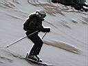
4 июня. И последний, третий катальный день - спуск с вершины Перевальная. Были планы траверснуть до другой вершины, но попытка траверса закончилась сходом мокрой лавины. Снег плотный, тяжелый, на подложке не держит, да еще и доски-лыжи тормозит. Кое как спустились, опять в облачности.
Так что свежий летний снег порадовал, но недолго :)
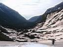
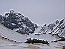
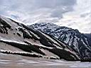
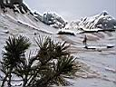
Склоны необычной расцветки - белый свежий снег на старом коричневом
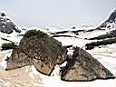
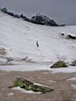
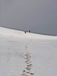
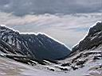
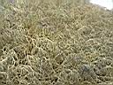
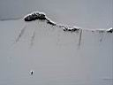
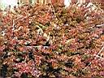
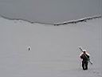
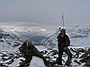
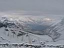
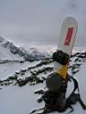
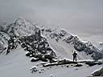
На перевале Новосибирского Клуба Туристов (НКТ). Баргузинский хребет под низкими облаками.
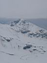
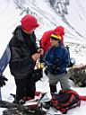
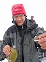
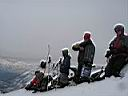
Экстрим-бар на вершине Перевальная. Сухофруктовые ништяки, бальзам из фляжки и солнечное регги...
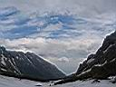
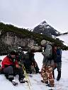
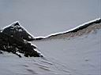
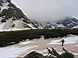
Возвращение в лагерь. На спуске не фотографировал, уж очень обстановка была напряженная :)
Во второй половине дня - сворачиваем лагерь и выходим в лето. Выход из лагеря под дождиком, который к счастью скоро закончился. Часть дороги прокатились в грузовике до деревни, а там нас ждали бани, кафе с позами и сметаной, вручение памятных дипломов, ночные прогулки.
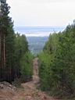
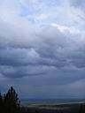
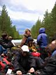
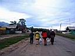
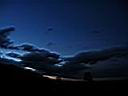
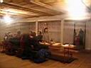
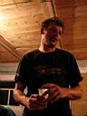
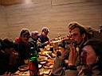
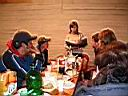
Из отчета Байкальского Экстрима :
...Погода не много улыбнулась экстремалам в заключительный день катания. Отрылись потрясающие виды и наконец-то люди увидели знаменитые вершины Варяг, Аргада и конечно же кулуар Гигант. Но за сутки навалило столько снега, что на ярком солнце он стал быстро тяжелеть и вскоре зашумели по крутым склонам лавины и камнепады. Поднявшись на перевал, передовая группа сноубордистов и горнолыжников, не много полюбовавшись панорамами центральной части Баргузинского хребта, решила с вершины Перевальная траверсировать в Ключевой цирк. Но сорвав пару мощных лавин, решено было по перегруженным склонам не ехать, а валить вниз, в базовый лагерь. Ведь в этот день ещё предстоял спуск в село Ярикта, мытьё в бане, поедание большого количества поз, клубная вечеринка в сельском клубе и посещение вновь обретённой святыни Баргузинской долины - места изображения богини Янжимы...
Это еще не все! Экскурсия в дуган, красиво и интересно!
Окончание...
.